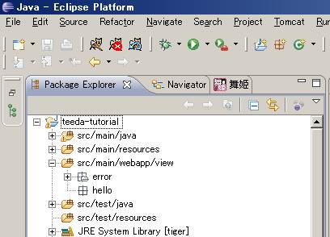
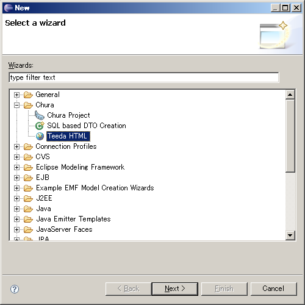
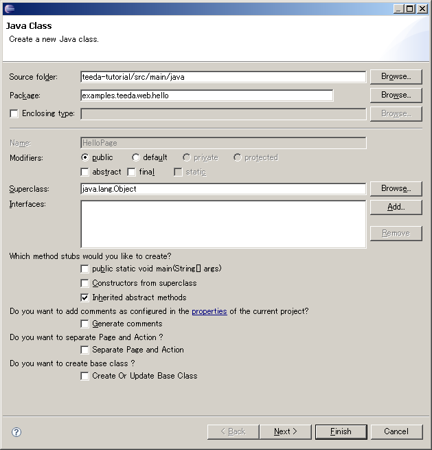

HelloWorldアプリケーションを作ってみよう
本チャプターのゴール
このチャプターでは、簡単なHello Worldと表示するだけのアプリケーションを作成することで、次のような事柄を学びます.
- Teedaアプリケーションの作成方法の基礎
- TeedaのHTMLテンプレートとPageクラスの関係
- Teedaアプリケーション作成時の手順とDolteng活用方法
- Teedaアプリケーションを動かす
HTMLテンプレートの作成
Teeda HTMLの作成
まずはHTMLテンプレートを作成しましょう.
TeedaでのHTMLテンプレートの置き場所はsrc/main/webapp/view/以下になっています.
そこにhelloというフォルダを作成します.下記の図のようになります.

次にhello.htmlを作成します.Eclipseの通常の新規作成メニューからファイルを作成してもかまいませんが、
ここではせっかくDoltengを入れているのでDoltengのTeedaHTML作成機能を使ってみましょう.
パッケージエクスプローラ上で右クリック→New→Otherを選ぶと、ダイアログが開きます.
その中にChuraというカテゴリがあるはずなので、内にあるTeeda
HTMLを選び、src/main/webapp/view/hello以下にhello.htmlを作成します.

hello.htmlは初期状態では下記のようになっているはずです.
DoltengのTeeda HTML作成機能を使えば、Teedaで必要な大枠のhtml(正確にはXHTML)を作成してくれます.
<?xml version="1.0" encoding="UTF-8"?> <!DOCTYPE html PUBLIC "-//W3C//DTD XHTML 1.0 Transitional//EN" "http://www.w3.org/TR/xhtml1/DTD/xhtml1-transitional.dtd"> <html xmlns="http://www.w3.org/1999/xhtml" xml:lang="ja" lang="ja"> <head> <meta http-equiv="Content-Type" content="text/html; charset=UTF-8" /> </head> <body> <form id="Form"> <div><span id="messages"></span></div> </form> </body></html>
hello.htmlの作成
これにまずはHello Worldと表示できるように出力用のタグを書いていきます.
Doltengが作成してくれたテンプレートに対して、
Hello <span id="name"></span>という1行を追加しましょう.
このようになります.
<?xml version="1.0" encoding="UTF-8"?> <!DOCTYPE html PUBLIC "-//W3C//DTD XHTML 1.0 Transitional//EN" "http://www.w3.org/TR/xhtml1/DTD/xhtml1-transitional.dtd"> <html xmlns="http://www.w3.org/1999/xhtml" xml:lang="ja" lang="ja"> <head> <meta http-equiv="Content-Type" content="text/html; charset=UTF-8" /> </head> <body> <form id="Form"> <div><span id="messages"></span></div> Hello <span id="name"></span> </form> </body></html>
追加した1行にはどのような意味があるのでしょうか.
よく注目してみるとspanタグにidがついているのがわかるはずです.
このid属性がTeedaの肝になります
TeedaではHTMLとそれに対応するPOJOクラス（Pageクラス）を1対1にマッピングするために、Pageクラスのプロパティは各HTMLタグのidによってマッピングされます。
（Pageモデルの詳細についてはページモデル
を参照してください。）
この原則をあてはめると、hello.htmlに対してはHelloPageクラスがいる必要があります.
またhello.htmlのnameというspanタグに対応するように、HelloPageにnameというプロパティが対応します.
では次のセクションでHTMLに対応するPageクラスを作成してみましょう.
Pageクラスの作成
HelloPageの作成
hello.htmlに対応するPageクラスを作成します.
ここでもEclipseの新規作成から通常のJavaクラスとしてPageクラスを作成することも出来ますが、
Doltengを使ってhello.htmlからPageクラスを簡単に作ることが可能です.

hello.html上で右クリック→Dolteng→Create New Page classでPageクラスを作成できます.ダイアログが出ますが、そのままFinishボタンを押してください
すると下記のようなHelloPageクラスが作成されます.
package examples.teeda.web.hello;
public class HelloPage {
public String name;
public Class initialize() {
return null;
}
public Class prerender() {
return null;
}
}
みてわかるとおり、hello.htmlで定義してあったid属性にnameという値を持つプロパティがPage作成時に定義されています.
またSeasar2.4のpublicフィールド機能により、nameプロパティのgetter/setterも必要ありません.
(initialize/prerenderメソッドについては後述するので今は心配ありません.)